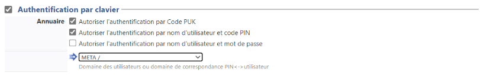
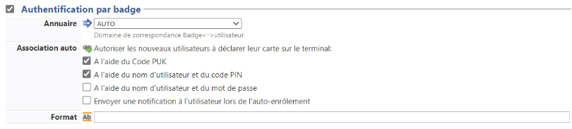
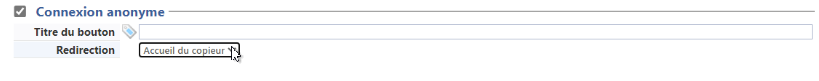
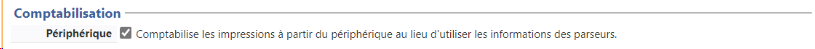
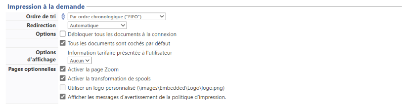
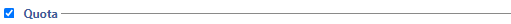
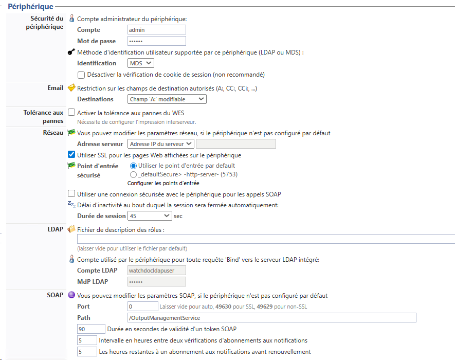

WES Toshiba - Configurer le profil WES
Créer le profil WES
Lors d'une installation initiale de Watchdoc, un profil WES peut être automatiquement créé et configuré à l'aide de paramètres par défaut par l'assistant d'installation. Outre ce premier profil WES par défaut, vous pouvez ajouter autant d'autres profils WES que nécessaires.
-
Depuis le Menu principal de l'interface d'administration, section Configuration, cliquez sur Web & WES :

-
Dans l'interface Web, WES & Destinations de numérisation - Gestion des interfaces clientes, cliquez sur Créer un nouveau profil WES.
-
Dans la liste, sélectionnez le type de profil à créer :

è vous accédez au formulaire Créer un profil WES comportant plusieurs sections dans lesquelles vous configurez votre WES.
Une barre de navigation vous aide à accéder rapidement à la section souhaitée :
Configurer le profil WES
Configurer la section Propriétés
Utilisez cette section pour indiquer les principales propriétés de WES :
-
Identifiant : saisissez l'identifiant unique du profil WES. Il peut comprendre des lettres, des chiffres et le caractère "_", avec un maximum de 64 caractères. Cet identifiant n'est affiché que dans les interfaces d'administration.
-
Nom : saisissez le nom du profil WES. Ce nom explicite n'est affiché que dans les interfaces d'administration.
-
Global : dans le cas d'une configuration de domaine (maître/esclaves), cochez cette case pour répliquer ce profil du serveur maître vers les autres serveurs.
-
Langue : sélectionnez la langue d'affichage du WES configuré. Si vous sélectionnez Détection automatique, le WES adopte la langue qu'il trouve par défaut dans la configuration de l'appareil.
-
Version : sélectionnez la version du WES. Pour la v3, vous pouvez personnaliser l'interface en choisissant la couleur des boutons et des images en fonction de votre identité graphique :
-
Couleur : entrez la valeur hexadécimale de la couleur correspondant à la couleur du bouton WES. Par défaut, les boutons sont orange (#FF901). Une fois la valeur saisie, la couleur s'affiche dans le champ.
-
Images : si vous souhaitez personnaliser les images WES, entrez le chemin du dossier dans lequel sont enregistrées les images que vous souhaitez afficher à la place des images par défaut (stockées dans C:\Program Files\Doxense\Watchdoc\Images\Embedded\Brands\[Nom_du_fabricant] par défaut).
N.B. : pour plus d'informations sur la procédure de personnalisation, cf. chapitre Personnaliser les boutons et l'image du WES.
-
{kind=link}
Configurer la section Authentification par clavier
-
Activer l'option : cochez la case pour autoriser l'authentification de l'utilisateur depuis un clavier physique ou tactile de l'écran, puis précisez les modalités de cette authentification :
-
Mode d'authentification : dans la liste, sélectionnez le mode d'authentification que vous souhaitez activer :
-
Code PUK
 Puk = Print User Key.
Dans Watchdoc, il s'agit d'un code associé à un compte utilisateur pour permettre à ce dernier de s'authentifier dans un WES.
Le code PUK est généré par un algorithme.
L'utilisateur peut le consulter dans la page "Mon compte" de Watchdoc.
Par souci de sécurité, nous déconseillons l'utilisation du code PUK et recommandons l'utilisation d'un login (compte utilisateur)/code PIN. : le code PUK est automatiquement généré par Watchdoc selon des paramètres définis dans l'annuaire. Ce code est communiqué à l’utilisateur dans la page "Mon compte" ;
Puk = Print User Key.
Dans Watchdoc, il s'agit d'un code associé à un compte utilisateur pour permettre à ce dernier de s'authentifier dans un WES.
Le code PUK est généré par un algorithme.
L'utilisateur peut le consulter dans la page "Mon compte" de Watchdoc.
Par souci de sécurité, nous déconseillons l'utilisation du code PUK et recommandons l'utilisation d'un login (compte utilisateur)/code PIN. : le code PUK est automatiquement généré par Watchdoc selon des paramètres définis dans l'annuaire. Ce code est communiqué à l’utilisateur dans la page "Mon compte" ; -
Nom d'utilisateur et code PIN : composé de 4 ou 5 chiffres, le code PIN de l'utilisateur (1234, par exemple) est enregistré comme attribut LDAP ou dans un fichier de type CVS ;
-
Nom d'utilisateur et mot de passe : autoriser l'authentification par nom d'utilisateur et mot de passe :
-
-
Annuaire : dans la liste, sélectionnez l'annuaire qui doit être interrogé lors de l'authentification par clavier, en fonction de l'endroit où sont enregistrés les utilisateurs.

Configurer la section Authentification par badge
Authentification par badge : cochez la case pour autoriser l'authentification de l'utilisateur à l'aide d'un badge, puis précisez les modalités de cette authentification :
-
Annuaire : dans la liste, sélectionnez l'annuaire qui doit être interrogé lors de l'authentification par badge, en fonction de l'endroit où sont enregistrés les codes des badges (par ex., si le code du badge est enregistré dans l'Active Directory, sélectionnez [utiliser l'annuaire par défaut] ; si les badges sont stockés dans la table SQL CARDS, sélectionnez CARDS , etc.) ;
-
Association auto : si vous autorisez l'enrôlement
Action au cours de laquelle un compte utilisateur est associé au numéro de badge qui lui appartient. L'enrôlement est réalisé lors de la première utilisation d'un badge. L'enrôlement peut être réalisé par le responsable informatique lorsqu'il délivre le badge à un utilisateur ou par l'utilisateur lui-même qui saisit son identifiant (code PIN, code PUK ou identifiant et mot de passe) qui est alors associé à son numéro de badge. Une fois l'enrôlement réalisé, le numéro de badge est associé définitivement à son propriétaire. depuis le WES, précisez de quelle manière l'utilisateur associe son badge à son compte lors de la première utilisation :
Code PUK : l'utilisateur saisit son code PUK pour enrôler son badge ;
Nom d'utilisateur et code PIN : l'utilisateur saisit ses nom et code PIN pour enrôler son badge ;
Compte et mot de passe : l'utilisateur saisit son compte LDAP (login et mot de passe) pour enrôler son badge ;
Envoyer une notification : cochez la case pour notifier l'utilisateur une fois son badge enrôlé ;
Format : indiquez, si nécessaire, de quelle manière la chaîne de caractères du numéro du badge lu doit être transformée. Ex : raw;cut(0,8);swap (cf. Changer le format du badge).

Configurer la section Connexion anonyme
Cochez cette section pour activer la connexion anonyme afin de permettre à un utilisateur non-authentifié d'accéder au périphérique en cliquant sur un bouton.spécifique.
Il est possible de restreindre les fonctionnalités auxquelles l'utilisateur anonyme peut accéder en appliquant une politique de droits sur la file, sur le groupe ou sur le serveur et en utilisant le filtre Utilisateur anonyme.
-
Titre du bouton : saisissez dans ce champ le libellé affiché sur le bouton d'accès aux fonctions du périphérique. Par défaut, le texte est Anonymous :
-
Redirection : choisissez l'application vers laquelle l'utilisateur anonyme est dirigé après avoir cliqué sur le bouton Anonyme :
-
Accueil du copieur : l'utilisateur anonyme accède à l'écran d'accueil du périphérique d'impression ;
-
Photocopie : l'utilisateur anonyme accède à la fonction de photocopie ;
-
Numérisation : l'utilisateur anonyme accède à la fonction de numérisation ;
-
Fax : l'utilisateur anonyme accède à la fonction de fax ;

N.B. : il est possible de restreindre les fonctionnalités dont l'utilisateur anonyme peut bénéficier en appliquant une politique de droits (sur la file, sur le groupe ou sur le serveur) en utilisant le filtre Utilisateur anonyme.
-
Configurer la section Comptabilisation
Dans cette section, indiquez si vous souhaitez que la comptabilisation soit effectuée par le périphérique lui-même ou partir du spooler Windows.
-
Périphérique > Comptabilise les impressions à partir du périphérique : cochez cette case si vous souhaitez que lcomptabilisation soit prise en charge par le périphérique. Dans ce cas, précisez le mode de comptabilisation :

Configurer la section Impression à la demande
Dans cette section, vous précisez les paramètres liés à la fonction d'impression à la demande, c'est-à-dire l'interface depuis laquelle l'utilisateur accède à ses travaux en attente et depuis laquelle il supprime ou valide les impressions :
-
Icône dans le menu : pour accéder à l'interface d'impression à la demande,
l'utilisateur clique sur le logo Watchdoc. Par défaut, ce logo s'intitule "Mes impressions".
-
Nom de l'application : saisissez le libellé que vous souhaitez associer au logo à la place du libellé par défaut ;
-
-
Ordre de tri : dans la liste, sélectionnez l'ordre dans lequel les impressions doivent être présentées sur le WES :
-
Chronologique inverse: du plus récent au plus ancien ;
-
Chronologique: du plus ancien au plus récent.
-
-
Redirection : précisez le comportement du WES lors de la connexion de l'utilisateur et notamment la redirection vers une autre page que la page d'accueil :
-
Aucune : le WES affiche l'interface d'accueil définie par défaut et ne redirige vers aucune autre interface ;
-
Automatique : le WES affiche l'interface d'accueil définie par défaut si l'utilisateur n'a pas de document en attente ; en revanche, si l'utilisateur a des documents en attente, le WES affiche la liste des documents ;
-
Impressions en attente : le WES affiche la liste des documents en attente même s'il n'y en a aucun.
-
Options :
-
Débloquer tous les documents à la connexion : cochez la case pour faire en sorte que tous les travaux en attente soient automatiquement imprimés lorsque l'utilisateur s'authentifie sur le périphérique d'impression. Dans ce cas, l'utilisateur n'accède pas à la liste des travaux en attente pour valider ceux qu'il souhaite imprimer.
-
-
Pages optionnelles :
-
Activer la page zoom : cochez cette case pour que l'utilisateur puisse activer le zoom sur les travaux en attente d'impression ;
-
Activer la transformation de spools : cochez cette case pour activer la fonction de transformation de spools ;
-
Activer les prévisualisations dans la page des jobs : cochez cette case pour que l'utilisateur puisse prévisualiser les travaux en attente avant de valider l'impression.
-
-
Options d'affichage : dans la liste, sélectionnez l'information tarifaire affichée à l'utilisateur via le WES : aucun, le prix ou le coût de ses impressions.
-
Forcer l'affichage monétaire sur 2 décimales : cochez la case pour limiter l'affichage du prix à 2 décimales uniquement.
-
Utiliser un logo personnalisé :(pour le WES V2 uniquement) cochez la case si vous souhaitez afficher un logo personnalisé à la place du logo Watchdoc par défaut.
-
Afficher les messages d'avertissement : cochez cette case si vous souhaitez informer les utilisateurs de la politique d'impression mise en place qui pourrait modifier leurs choix initiaux.
-
-
Symbole monétaire : si vous le souhaitez, saisissez un autre symbole monétaire que le symbole € par défaut.

Configurer la section Quota
- Activer l'option : cochez la case pour que le WES gère les quotas d'impression

Configurer la section Périphérique
Cette section permet de définir le mode de connexion entre le serveur et les périphériques d'impression.
-
Sécurité du périphérique : cochez la case si vous utilisez les identifiants par défaut ou indiquez le Compte (login) et le mot de passe administrateur du périphérique dont Watchdoc a besoin pour communiquer avec lui lors de certaines opérations (installation automatique, requêtes SOAP...).
-
Identification : dans la liste, sélectionnez la méthode d'authentification (MDS ou LDAP) que vous souhaitez utiliser.
-
LDAP : disponible avec les versions Open Platform 2.3 et ultérieures et conservé pour compatibilité ascendante mais non recommandé ;
-
MDS : disponible avec les versions Open Platform 3.0 et ultérieures.
-
-
Email : Destinations : si nécessaire, sélectionnez la restriction posée sur la destination lors d'un envoi par email ;
-
Tolérance aux pannes : cochez cette case pour activer la fonction de tolérance aux pannes reposant sur un principe de répartition de charge (load-balancing). Si vous activez cette fonction, il est nécessaire de configurer l'impression interserveur (cf. Configurer l'impression interserveur). S'il n'existe pas de système de répartition de charge dans la configuration, cette fonction est inutile.
-
Réseau :
-
Adresse du serveur : ce paramètre permet de préciser si les périphériques d'impression se connectent via l'adresse IP ou le nom DNS (déterminés au démarrage du service) du server Watchdoc. Si le serveur possède plusieurs adresses IP ou si vous voulez spécifier manuellement l'adresse, sélectionnez "Adresse ci-contre" et remplissez le champ.
-
Point d'entrée sécurisé : si vous sélectionnez un mode de connexion SSL ou Mixte, depuis la v. 6.1.0.5262, vous pouvez préciser le point d'accès que vous souhaitez utiliser :
-
point d'entrée personnalisé (préalablement configuré dans la section DSP (cf. Configurer le Serveur web) :
-
le port 5753 par défaut du serveur Watchdoc ;
-
-
Utiliser SSL pour les pages Web affichées sur le périphérique : par défaut, le SSL est activé pour sécuriser les pages du WES sur le périphérique afin de générer des alertes en cas de faille de sécurité (certificats non- reconnus, par exemple).
N.B. : si vous désactivez le SSL (pour régler des problèmes de lenteur, par exemple), nous vous recommandons de ne pas utiliser l'authentification ou l'enrôlement du badge par compte et mot de passe.
-
Utiliser une connexion sécurisée avec le périphérique pour les appels SOAP :
-
Durée de session : indiquez le délai d'inactivité au-delà de laquelle la session est fermée.
-
- LDAP : saisissez le chemin vers le fichier dans lequel sont configurés les rôles
- compte LDAP : saisissez le compte utilisé par le périphérique pour toute requête 'Bind' vers le serveur LDAP intégré:
- MdP LDAP : complétez le paramètre précédent en saisissant le mot de passe correspondant au compte.
-
SOAP : saisissez les informations dédiées aux requêtes SOAP si elles ne correspondent pas aux paramètres par défaut.

Valider le profil
1. Cliquez sur le bouton  pour valider la configuration du profil WES.
pour valider la configuration du profil WES.
è Une fois validé, le profil WES peut être appliqué sur une file d'impression.